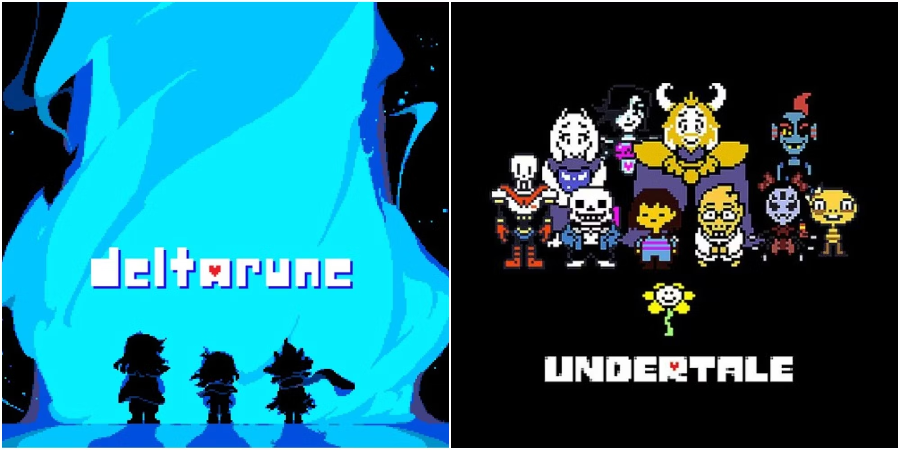
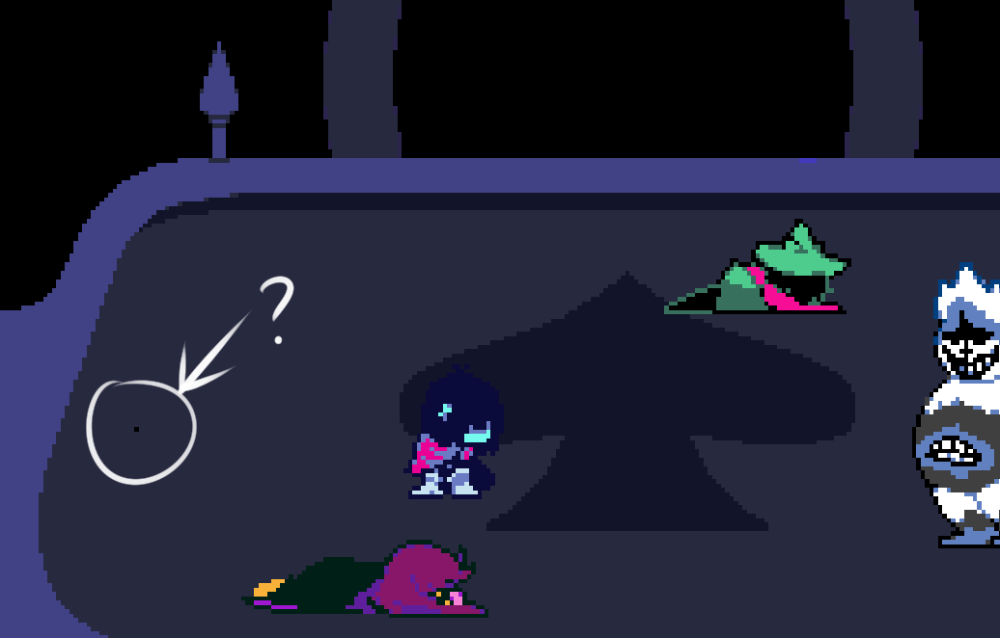
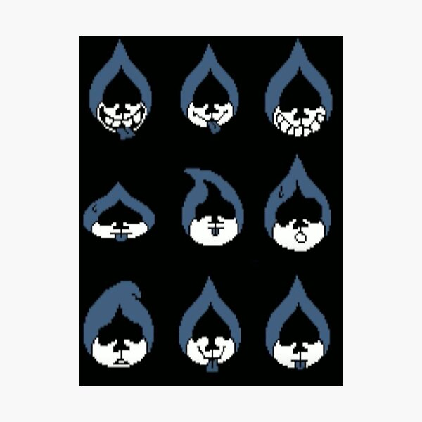
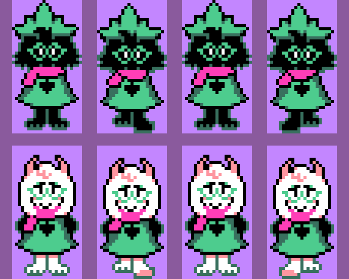
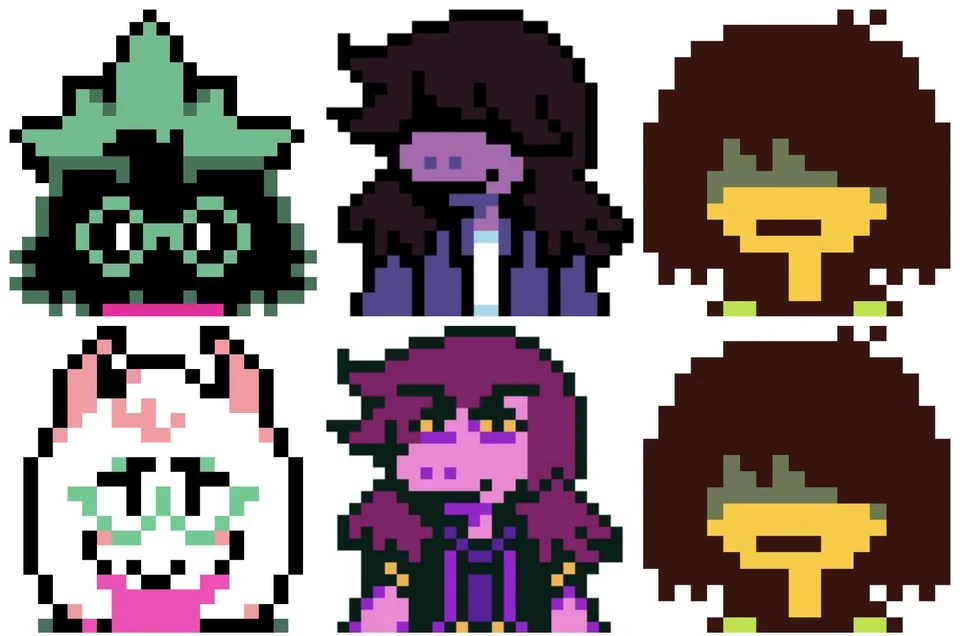

Hyperanalyzing The Art of Deltarune Chapter I Pacifist Route
Apr 6, 2023Some Context
Deltarune if you haven’t heard of it, is a spinoff game set within the same universe as Undertale which was revolutionary for its time for how it played with players expectations about what an RPG should play like. The most notable difference from the traditional RPG was that it incentivized players to spare and not attack their opponents while playing a bullet hell minigame.
Deltarune similarly follows suit with the same premise of sparing and bullet hell minigames. What is special about the game and its art is that it was essentially entirely made by one person Toby Fox. For that reason when it comes to juggling the art, and everything else about game development, it is important for how the game is able to be humorous while also adding to the game’s narrative and messages of having a conflicting identity or having a change in oneself.
Image from thegamer.com.
Mistakes Can Add Humor
Though it might seem like mistakes are a bad thing when it comes to art, it actually helps make the art for Deltarune appear more human while also being comedic and thematic for the game. One hilarious moment in the game’s history is when players found a misplaced pixel in one of the backgrounds for the game. After Toby Fox found out about it, instead of fixing it, he moved it in an update one pixel to the left. Through this, it provided for a good laugh about the situation while also pointing fun at people who are overly angered over a small mistake.
The stray pixel is pictured above from Reddit.
The Significance of a Mistake
Another mistake I found while playing the game is one stray blue pixel in the character Lancer’s portrait artwork. If you didn’t already know, portrait artwork since it is usually heavily throughout the game has plenty of attention put onto it since it will be shown every time that character talks(which since Lancer is a pretty major character means that it is used often).
Along with this, traditionally in pixel art, one is meant to essentially color within the pixel or lines with neat and precise artwork. For that reason, it is very strange for there to be a stray blue pixel in Lancer’s character artwork unless it was a deliberate choice for the character.
Lancer Portrait Art Pictured Above from Redbubble.
Mistakes can be Representative
Especially since Lancer is meant to be a mockery or a joke of a villain the pixel could be a joke, as Lancer often fails to be threatening even though he tries to be instead turning on the side of good later on. The stray pixel could also represent how he is drawn shakily representing his uncertainty about his role as a villain, or it could also signify how he is a crude drawing by the main characters as his world appears to be fictional. Because of this, while a mistake might seem to be a mistake, it could be intentional as a joke or to reveal the message of a fractured identity.
Changes in Character Design: Ralsei
Another staple of Toby Fox’s artwork in Deltarune is character design changes after character progression. Though this is not unique or strange given the history of this in other works with for example cutting hair meaning growth, change, or a shift in one’s identity, it is still used well in Deltarune. One notable example is the change in Ralsei from being a cloaked figure with the face details obstructed from view in shadow. Ralsei at first spends time trying to convince the other two main characters Kris and Susie to fit the role of the pacifist trio that is meant to save the world.
He struggles with feeling confident or trusting them even though he is mean to due to a prophecy. This all changes however through the course of the game as Kris has Ralsei’s back and Susie changes to be more open to less violence. After he lifts his hat and reveals himself, his change in character design adds to representing how he opened up to the two of them.
Ralsei character sprites from Reddit..
Changes in Character Design: Susie
Similarly to the character change in Ralsei, Susie changes as well. From the beginning of the game she was always standoffish and hesitant when it came to the idea of friends and mercy. She was always the one to jump to violence as a solution when it came to any sort of conflict as seen in the opening introduction where she threatens Kris to do their project and to not mention that she ate the teacher’s piece of chalk.
However, after she met Lancer, the wannabe villain, she pities and tries to teach him how to be evil. Through this she opens up to him and considers him a friend and after a problem causes them and Kris and Ralsei to come together she ends up working with them and eventually reveals her eyes which had been hidden for the majority of the game under her bangs. This change in character design shows how she opens up to the characters and changes to be more open to pacifism and mercy.
Main character sprites from Reddit.
Closing Thoughts
Through Toby Fox’s artwork, Deltarune is able to add humor while also relaying messages about changes in identity through his characters. His work can serve as inspiration for other artists and storytellers even outside of gaming.
Works Cited
Deltarune. Windows PC version, Toby Fox, 31 October, 2018.